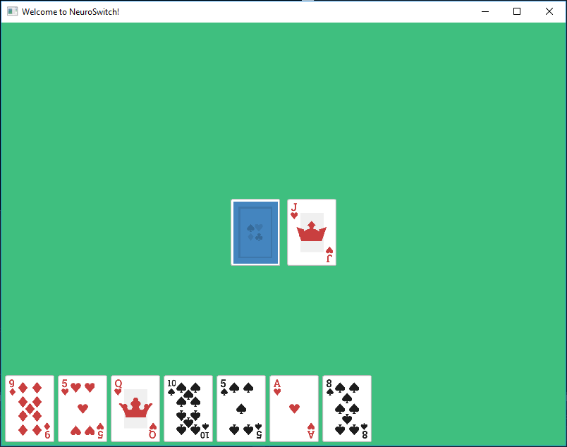
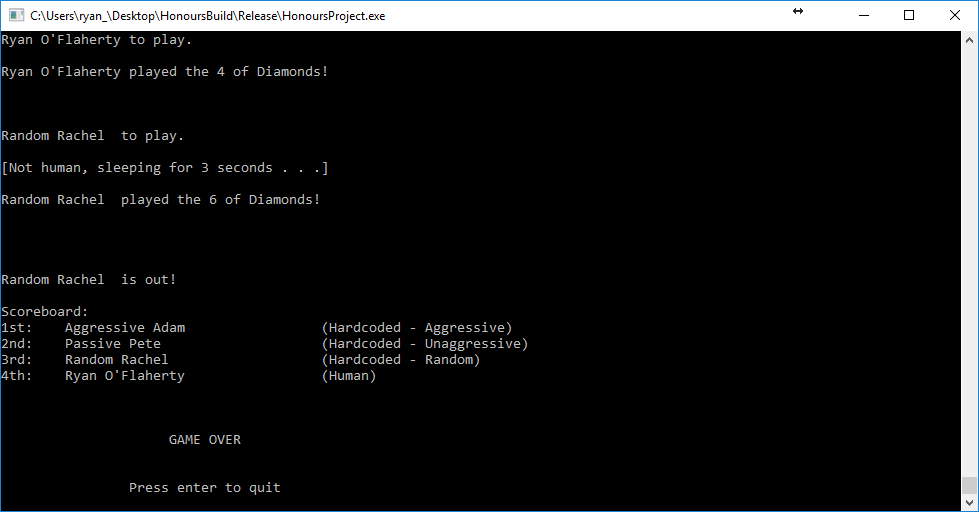
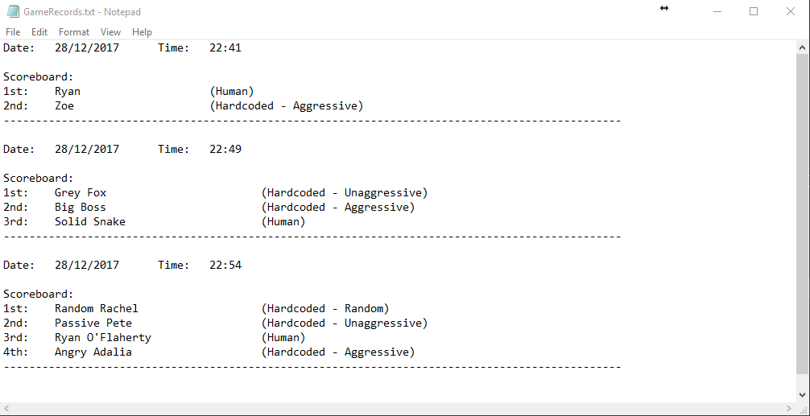

NeuroSwitch was built using Visual Studio 2017, and was written in C++. For the visual aspects of the project, SFML was imported.
The project is open source; The code can be checked out over on my GitHub, and you can download my dissertation as a PDF here.
There will also be more documentation over on my YouTube channel.
A YouTube playlist dedicated to the project can be found at the bottom of this page.
The textures used in game were made by Kenney Vleugels, and can be found here. They come as part of a larger pack, but only the playing card textures were necessary for this project.
Here is an in-game screenshot from the 22nd of December, 2017.

The next image shows console output from the end of a game, and the displaying of the scoreboard.

Notice the column on the right, showing the playstyle of each player, and in particular the hardcoded ones. "Human" just means that a human user is in control of that player, and they have free reign on how they wish to compete in the game. The automatic players are more interesting however.
The aggressive playstyle is coded so that the first thing the player does, if it is able to play, is to check whether or not it has a black queen within its hand. If not, it will then check for a two, and failing that it will check for an eight. The aggressive playstyle will always play the cards that will negatively affect the opposition first, before settling for the first playable card in its hand if it has none that will do so.
Unaggressive, as you might expect, does the exact opposite. Unaggressive attempts to avoid the power cards unless they are the only playable cards within their hand. This tends to yield poor results.
The previous two playstyles will just play the first playable card in their hand (if their attempted conditions are not met). Random does not. While it does use the same code and pick the first legally playable card in its hand, it gives the hand a good shuffle before doing so. Thus, the first playable card can vary.
These are almost like dummy players. The goal of the project is to implement an Artificial Neural Network that will learn how to play the game and improve over time, based on the results of a large quantity of games and generations.
For now, these allow me to play the game and test that there are no issues with the game. I need to know that the game itself is working properly before I start to implement artificial intelligence, as finding a bug at a later stage would render any data gathering that had been done to that point useless.
It can be fun to play against these automatic strategies too!
The results of each completed game are also being recorded in a text file. It shows much the same as the previous screenshot, but with the inclusion of the current date and time for more informative data to look back on.
This can be seen in the following screenshot.
